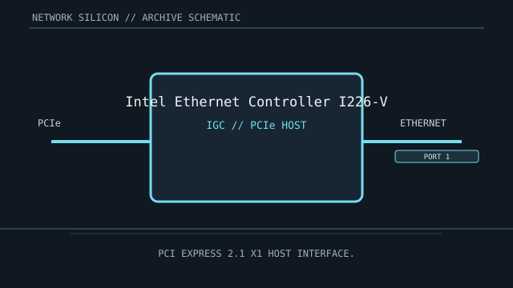

[ MODEL-SPECIFIC NETWORK HARDWARE ]
Intel Ethernet Controller I226-V
Single-port 2.5GbE controller IC for client motherboard and PCIe adapter designs. This is a controller/chip record; finished-card details are implementation-specific.

IDENTIFICATION: Match complete component top-mark, stepping and board revision. Nominal signaling rates are not measurements of application throughput.
Exact specifications and compatibility
| Dedicated subcategory | Ethernet controllers and PHYs |
|---|---|
| Exact controller identity | Intel Ethernet Controller I226-V |
| Component / board identity | Controller IC with integrated 2.5GBASE-T PHY; carrier board provides magnetics and RJ-45 connection. |
| PCIe bus and host interface | PCI Express 3.1 x1 host interface. |
| Ethernet ports / physical interface | One 10/100/1000/2500BASE-T port with auto-negotiation; actual link depends on board circuitry, peer port and twisted-pair cabling. |
| Nominal rate (not measured) | Up to 2.5 Gb/s nominal on one Ethernet link; not measured throughput. |
| Drivers and OS compatibility | Linux igc driver; Intel/OEM driver packages for supported Windows versions. Check exact stepping, platform BIOS/NVM, device ID and driver release; support differs among motherboard implementations. |
| Board / system compatibility | Requires an I226-V-compatible board or card with PCIe x1 routing, power, clock/reset, NVM and 2.5GBASE-T analog components. A bare IC is not a standalone PCIe card. |
| Revision and variant warning | I226-V is distinct from I225-V and the I226-IT variant. Identify the full suffix and stepping; firmware, platform design and board vendor support affect operation. |
| Measured throughput | No measured benchmark is claimed for a physical specimen. A valid result records the host, link partner, medium, driver/firmware, traffic pattern, test tool and duration. |
Identification and revision notes
I226-V is distinct from I225-V and the I226-IT variant. Identify the full suffix and stepping; firmware, platform design and board vendor support affect operation.
Linux igc driver; Intel/OEM driver packages for supported Windows versions. Check exact stepping, platform BIOS/NVM, device ID and driver release; support differs among motherboard implementations.
Requires an I226-V-compatible board or card with PCIe x1 routing, power, clock/reset, NVM and 2.5GBASE-T analog components. A bare IC is not a standalone PCIe card.
Archival and preservation notes
Record suffix and stepping, board model, device/subsystem ID and NVM version. Preserve original thermal pads/heatsink if fitted by the host design.
For an installed specimen, preserve source URL, access date, source revision and label/condition notes. Do not infer connector count or board-level compatibility from controller family name alone.
Manufacturer and driver sources
- Intel I226 controller familyIntel I226 controller family reference for product identity and supported feature information.
- Linux kernel igc driver sourceLinux igc driver implementation for the integrated PCIe 2.5GbE controller family.
Sources cover the named controller family and its relevant driver ecosystem. The exact board vendor’s compatibility list takes precedence for a finished adapter or motherboard implementation.